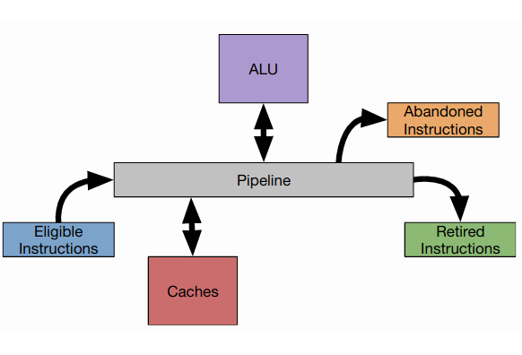
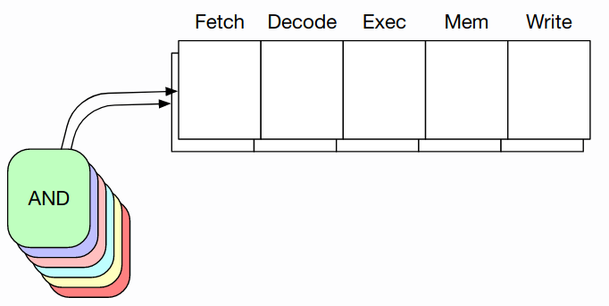
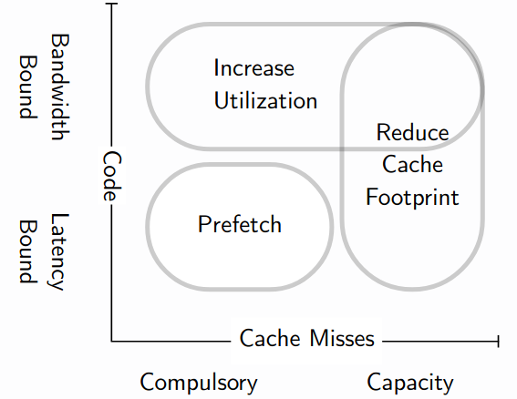

Lecture 4: Writing Efficient Code
Now that we know what a bottleneck is, how to identify one and model it, our challenge is build a system without a bottleneck, ie: one where all resources are equally utilised. This is known as a balanced system.
Unfortunately, there is no such thing as a balanced system (only balanced sections of code). Different hardware optimisations have varying impact on code and therefore we say that balance is a function of code.
The fundamental tradeoff is between CPU and memory bandwidth efficiency and hence we distinguish between resource-bound code:
- Compute-bound
- Memory-bound:
- Latency-bound
- Bandwidth-bound
We can influence these bottlenecks with different techniques, such as high-level techniques (choice of algorithm, memoisation, compression, etc.) and low-level techniques (our focus).
Compute-bound code
Our primary objective is CPU efficiency. Generally, CPU-bound applications are those that:
- are poorly implemented
- operate on small (cache-resident) datasets (ie: our bottleneck is not memory)
- are math-heavy (esp. floating point math)
- apply memory-oriented optimisations (ie: we have solved memory bottlenecks)
Our target metric is wall clock time. Because wall clock time can be difficult to measure precisely, we often use certain proxy metrics such as stall cycles (caused by hazards) or CPI (cycles per instruction).
Hazards cause stalls in the CPU pipeline and there are different types:
- Control hazards: stalls due to data-dependent changes in the control flow (jumps and branches).
- Data hazards: stalls due to operands (data) not being available on time.
- Structural hazards: stalls due to a lack of physical execution resources (registers, execution ports/units, ...).
We have already discussed hazards before (lecture 2) and they map nicely to the diagram below:
The ALU stall corresponds to a structural hazard, control hazards occur when no eligible instructions are ready (due to jumps) and abandonded instructions (due to misspeculation). Data stalls are caused by cache misses. Obviously, retired instructions are not hazardous.
Therefore, CPU optimisation is about mitigating these hazards and exploiting pipelined execution. Lets talk about some fundamental design decisions when it comes to pipelining.
Speculative execution
Its purpose is to keep the pipeline full even if no instructions are eligible by executing instructions speculatively. This aims to address control hazards (branching). The other type of speculation is memory prefetching (covered in the memory-bound section below).
Superscalar execution (dynamic parallelism)
The idea is to have multiple CPU pipelines within the same core. This means that different instructions can be in the same stage (eg: we can have two MUL instructions in the execution stage).
Modern CPUs tend to be four-way superscalar, ie: it has four different pipelines.
Out-of-order execution
As a consequence of superscalar execution, out-of-order execution exploits the independence of instructions.
After decoding the instruction, the CPU will know if it has dependencies on other instructions or data. If instructions have no unsatisfied dependencies, it will move onto the execution stage directly. Therefore, we may execute instructions in a different order in which they arrive.
Out-of-order execution aims to address data and structural hazards.
SIMD (static parallelism)
Another form of instruction-level parallelism is through SIMD instructions (Single Instruction Multiple Data). These instructions allow the CPU to perform the same operation on multiple data items at once, in a single cycle.
They use large specialised vector registers for different data types, allowing them to load multiple data items into a single register.
Improving efficiency with partial evaluation
An important consideration to improving CPU efficiency is to write runtime predictable code for the critical path. We should evaluate code as early as possible and outside of the critical path whenever possible.
One technique is partial evaluation which consists of making the compiler work for you. We treat programs as multi-phased process. In every phase, you know more about the result so you can come up new programs that is more specialised tailored to the input. Examples are:
- Function inlining: the compiler evaluates a function jump and places the code at the call site.
- JiT compilation: we start with higher level bytecode and compile it into native machine code.
- Symbolic programming: perform arithmetic on symbols rather than values (eg:
x/xwill always be 1). - Constant expression evaluation: evaluate constant expressions at compile-time.
Example 1: constant evaluation
int result(int input) {
return input*3*5;
};
int result2(int input) {
int three = 3-1;
int five = 4+1;
return input*three*five;
};
int three = 3;
int five = 5;
int result3(int input) {
return input*three*five;
};
In result2(), the compiler figures out that variables three and five are always constant and replaces the operation with the values.
In result3(), the C compiler does not perform constant evaluation because it sees that three and five are variables available to other parts of the code and may be modified. It is important to understand the language semantics to know what constitutes a constant.
Example 2: lifting expensive operations
Any work that is executed often (such as in a loop) can be moved/lifted into a section where it executed seldomly. This can reduce control-flow hazards, since they now only occur once per loop rather than per iteration. A typical example is loop invariant motion, where we move loop invariant operations outside of the loop:
for (size_t i = 0; i < N; i++) output[i] = 7*8;
becomes:
int tmp = 7*8;
for (size_t i = 0; i < N; i++) output[i] = tmp;
A related problem is loop specialisation. Suppose we want to scale a vector:
void scaleVector(int* input, size_t inputSize, int scale) {
for(size_t i = 0; i < inputSize; i++)
input[i] *= scale;
}
The issue is that multiplications are quite expensive. Therefore, we can specialise the loop to avoid operations entirely (if scale == 1) or make them cheaper (use bit shifts).
void scaleVector2(int* input, size_t inputSize) {
if(scale != 1) { // avoid scale == 1 entirely
if(scale == 2)
(size_t i = 0; i < inputSize; i++)
input[i] <<= 1; // use cheap bitshift for scale == 2
else
(size_t i = 0; i < inputSize; i++)
input[i] *= scale;
}
}
Unfortunately, this leads to code duplication. Instead, we can use metaprogramming to get the compiler to do the work for you. The idea here is to generate special cases at compile-time and apply optimisations for these cases.
C++ supports template metaprogramming and allows us to turn this...
void scaleVector(int* input, size_t inputSize, int scale) {
for(size_t i = 0; i < inputSize; i++)
input[i] *= scale;
};
int useIt(int* input, size_t size) {
scaleVector(input, size, 2);
scaleVector(input, size, 1);
scaleVector(input, size, 0);
}
into this...
template <int scale> void scaleVectorPE(int* input, size_t inputSize) {
for(size_t i = 0; i < inputSize; i++)
input[i] *= scale;
};
int useIt(int* input, size_t size) {
scaleVectorPE<2>(input, size);
scaleVectorPE<1>(input, size);
scaleVectorPE<0>(input, size);
}
Because the scale factor is known at compile-time, the compiler will be able to replace a multiplication by 2 with a bitshift, ignore the scale of 1 and set the input to 0 directly in the third case.
A useful pattern is to create a map that holds precomputed special cases for certain inputs. If the input is defined in the map, the precomputed result is obtained. Otherwise, we can resort to our runtime version of the function.
Example 3: branch-free code
We can go even further by writing branch-free code. We have seen how control-dependencies can cause hazards, such as below:
for(size_t i = 0; i < inputSize; i++)
if(input[i] < high)
output[outI++] = input[i];
We can be clever and manipulate how the ouputI index changes:
for(size_t i = 0; i < inputSize; i++)
output[outI] = input[i];
outI += (size_t) (input[i] < high);
We are now writing everything to the output array however we only move onto the next case if the condition holds. If it does not hold, outI does not change and the next value will overwrite the previous value (which is fine). In fact, this is beneficial for cache locality!
We can see the performance impact compared to the previous snippet (for a random array):

We've converted this control dependency into a data dependency, so we need to be careful. If we find that branch missprediction is causing a problem, if-conversion is a good idea. Otherwise, it's probably not worth it (a lot of code is already very predictable, the case above is randomised). The bottom-line is: measure, then optimise!
Example 4: SIMD vectorisation
Compilers try to automatically vectorise your code. For a simple case like below...
for (size_t i = 0; i < 1024; i++) out[i] = in1[i] * in2[i];
...the compiler will succeed. However, for more complicated cases we need to explicitly vectorise our code using intrinsics. Lets see an example below:
#include <immintrin.h>
union v8f { // either a float[8] or a SIMD word
float floats[8];
__m256 simdVec;
};
auto input1 = new int[bounds1]; // random data
auto input2 = new int[bounds2]; // random data
// Non-vectorised sum:
float sum = 0;
for (size_t i = 0; i < bounds1; i++)
sum += input2[input1[i]]
// Vectorised sum:
v8f sums{};
for (size_t i = 0; i < bounds1 / 8; i++) {
v8f values {
// load values from memory using gather
.simdVec = _mm256_i32gather_ps(input2, ((__m256i*)input1)[i], sizeof(int))
};
// perform addition directly on the simd register
sums.simdVec = _mm256_add_ps(values.simdVec, sums.simdVec);
}
float sum = 0;
for (size_t i = 0; i < 8; i++)
sum += values.floats[i];
In the vectorised version, we obtain a x5 performance improvement than the scalar version. It is crucial that we keep our data in SIMD registers, otherwise we don't get the same benefits.
Memory-bound code
Data hazards are caused by instructions that need to access data from memory but it results in a cache miss, producing a pipeline stall. If the value has been accessed at some point previously, then this is called a capacity miss. Otherwise, this it is a compulsory miss.
Whenever we stall due to data hazards, we call the code memory-bound. We can be even more precise and describe two different situations whenever a stall occurs (due to data hazards):
- Memory bandwidth bound: if the memory bus if fully utilised
- Memory latency bound: if the memory bus is not fully utilised
We can apply different strategies based on the problem:
Compulsory cache misses
Generally, the number of data-hazards (cache misses) when running a loop will be:
\(\frac{\text{data size}}{\text{cache line size}}\)
Luckily, CPUs support hardware prefetching whereby caches speculatively load the next cache line by recognising patterns and strides. This works well for regular memory accesses, but may break for irregular accesses like data-dependent accesses.
struct tuple { int x; int y; int z;};
int sumIt(tuple* input, long size, tuple* input2) {
int sum = 0;
for(size_t i = 0; i < size; i++)
sum += input2[input[i].x].y;
return sum;
}
In the example above, the CPU knows the next cache line to be accessed for indexing into input[i] because it is a simple strided-accesses, however the index into input2 is data-dependent. We can help the CPU through software prefetching via intrinsics:
struct tuple { int x; int y; int z;};
int sumIt(tuple* input, long size, tuple* input2) {
int sum = 0;
for(size_t i = 0; i < size; i++){
sum += input2[input[i].x].y;
__builtin_prefetch(&input2[input[i + 16].x]);
}
return sum;
}
We hint at the CPU that we are soon going to access the value within 16 iterations. Note that this happens asychronously at the hardware level.
Increasing cache-line utilisation
Cache-line utilisation is defined as \(\frac{\text{data requested}}{\text{data loaded into cache}}\).
We can increase utilisation by changing the data layout in memory. We can change the struct tuple from the previous example to hold three arrays: one for x, y and z. This means that all xs are next to each other (and ys and zs):
struct tuple { int* x; int* y; int* z;};
int sumIt(tuple input, long size, tuple input2) {
int sum = 0;
for(size_t i = 0; i < size; i++)
sum += input2.y[input.x[i]];
return sum;
}
This optimisation is called Array-of-Structs to Struct-of-Arrays.
Capacity cache misses
Capacity-bound code suffers from thrashing: the larger the data we are accessing, the higher cost we are paying (because it doesn't fit in the cache).
This often happens when we have nested loops where we access two different regions of memory. A common solution to this issue is loop tiling, where we repeatedly access a cache line to keep it hot, so cache lines for one of the memory regions are never trashed.
(See lecture video at 1h 31m for good example)
In conclusion, if your code is:
- Bandwidth-bound, then increase cache-line utilisation
- Latency-bound, then prefetch data
- Capacity-bound, then reduce the footprint/hot dataset
Multicore hazards: cache coherency
A final type of hazard to be aware about in a multicore environment is cache coherency. Whenever one core modifies a value in its cache, it needs to be updated in the other cores' caches.
Intel x86 CPUs have a QPI bus (Quick Path Interconnect) that connects caches directly to avoid having to go through the memory bus for cache coherency updates.
The cache coherency protocol used by most modern CPUs is MESI, which describes four different states in which a cache line can be in:

- Exclusive: a single core exclusively holds a cached copy of some data in its cache.
- Shared: when another core accesses the data, it creates a copy in its core and the cache line becomes shared.
- Modified: when one of the cores modifies the data, the state of the cache line in its core becomes modified.
- Invalid: the other cores' same cache lines become invalid.